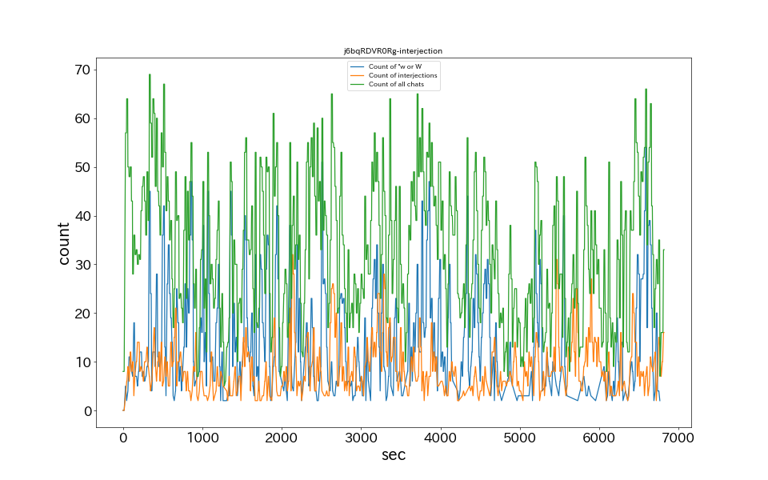
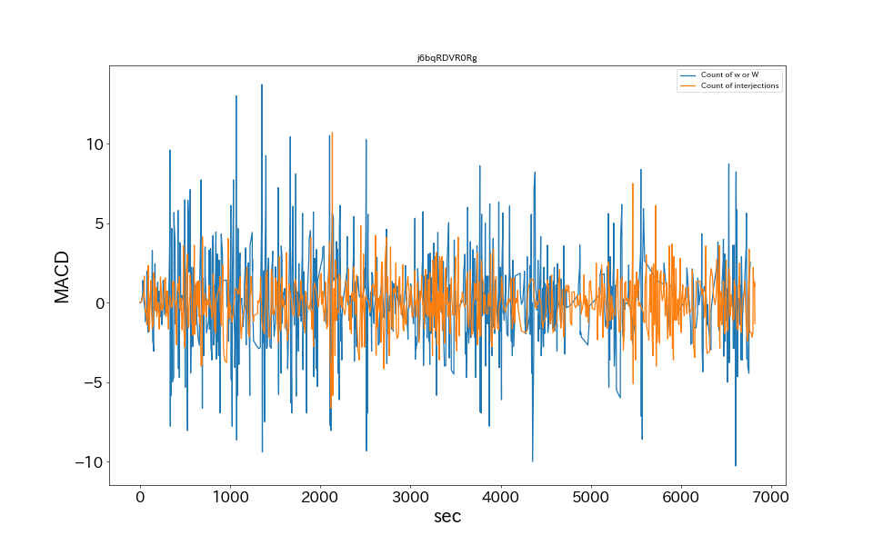

15秒あたりのコメント数
MACDによるバースト検知
草、wのチャット数ランキング
| No. | 時間 | 草、wチャット数 |
|---|---|---|
| 1 | 01:49:15 | 54 |
| 2 | 00:41:15 | 51 |
| 3 | 00:13:45 | 47 |
| 4 | 01:03:45 | 47 |
| 5 | 00:05:00 | 45 |
| 6 | 00:17:15 | 45 |
| 7 | 00:22:00 | 45 |
| 8 | 01:11:45 | 44 |
| 9 | 01:02:15 | 43 |
| 10 | 00:08:00 | 42 |
感動詞のチャット数ランキング
| No. | 時間 | 感動詞チャット数 |
|---|---|---|
| 1 | 00:35:00 | 32 |
| 2 | 01:30:30 | 31 |
| 3 | 00:35:15 | 28 |
| 4 | 00:54:15 | 28 |
| 5 | 01:37:45 | 27 |
| 6 | 00:43:30 | 26 |
| 7 | 01:30:45 | 26 |
| 8 | 00:43:15 | 25 |
| 9 | 00:54:30 | 25 |
| 10 | 01:34:45 | 25 |
MACDによるバースト検知
| No. | 時間 | 感動詞チャット数 |
|---|---|---|
| 1 | 00:30:45 | 9.59 |
| 2 | 00:30:30 | 8.53 |
| 3 | 01:12:00 | 7.72 |
| 4 | 01:12:15 | 7.18 |
| 5 | 00:59:00 | 7.11 |
| 6 | 01:11:45 | 6.76 |
| 7 | 00:30:15 | 6.58 |
| 8 | 00:50:45 | 6.47 |
| 9 | 00:57:30 | 6.44 |
| 10 | 01:50:30 | 6.11 |
チャット内単語出現ランキングTop20
| No. | 原型 | チャット数 |
|---|---|---|
| 1 | 草 | 4548 |
| 2 | さん | 976 |
| 3 | ヴァンプ | 849 |
| 4 | 怪しい | 598 |
| 5 | かなかな | 463 |
| 6 | 叶 | 402 |
| 7 | の | 387 |
| 8 | 葛葉 | 365 |
| 9 | ミンク | 343 |
| 10 | これ | 269 |
| 11 | ん | 253 |
| 12 | いい | 225 |
| 13 | こわい | 219 |
| 14 | うまい | 194 |
| 15 | 笹木 | 186 |
| 16 | 怖い | 185 |
| 17 | ない | 167 |
| 18 | こん | 145 |
| 19 | そう | 140 |
| 20 | w | 128 |